Week 1 · catch-up
Tue · 18 AugMotion graphic · The first three days
Aspen Claims ServiceProperty Claims ServicesScheduled · 18 Aug 🌐
+ Follow
A pattern we see repeatedly in property claims.
Across a broad sample of property claims, the gap that most consistently predicts downstream problems isn't in the inspection or the settlement. It's in the three days between when a claim is filed and when the adjuster actually reaches the property.
When that window is tight, files tend to close cleanly and stay closed. When it stretches, three things start to happen — none of them good.
The insured starts calling to ask what's happening. Trust erodes before the adjuster has even arrived.
Damage evolves. Water spreads. Smoke residue sets. Contents get moved. The condition captured at inspection isn't the condition of the original loss.
Documentation from other sources arrives first. Contractors, public adjusters, or the insured's own photos start shaping the narrative before the adjuster has assessed it independently.
None of this is dramatic on any single file. Compounded across a book of claims, it's the difference between a program that runs steadily and one that spends its year chasing supplements.
The partners who win on cycle time in the middle of the process usually built the win into the first three days.
#ClaimsWithAspen #ClaimsIntelligence #ClaimsOperations
…see more
👍 Like💬 Comment🔁 Repost➤ Send
✓ Delivered this round. Came back as an 8-second silent motion graphic rather than a flat static — it will autoplay muted in feed, and the copy line is fully legible on the closing frame, so it works without sound. Caption opener and the closing “partners” line both reflect our feedback.
Wed · 19 AugCarousel · Part 05 — series finale of How Claims Actually Work
Aspen Claims ServiceProperty Claims ServicesScheduled · 19 Aug 🌐
+ Follow
The end of a claim is quieter than the beginning. There's no phone call announcing that the file is closed, no envelope in the mail with a red stamp. For most policyholders, the closing is the moment they realize the payment has cleared and no one has followed up.
That's a system working — but it deserves a bit more explanation than it usually gets.
Part 05 of our series on how claims actually work. This is the finale — we'll be starting something new next week.
#ClaimsWithAspen #InsuranceClaims #PropertyClaims
…see more
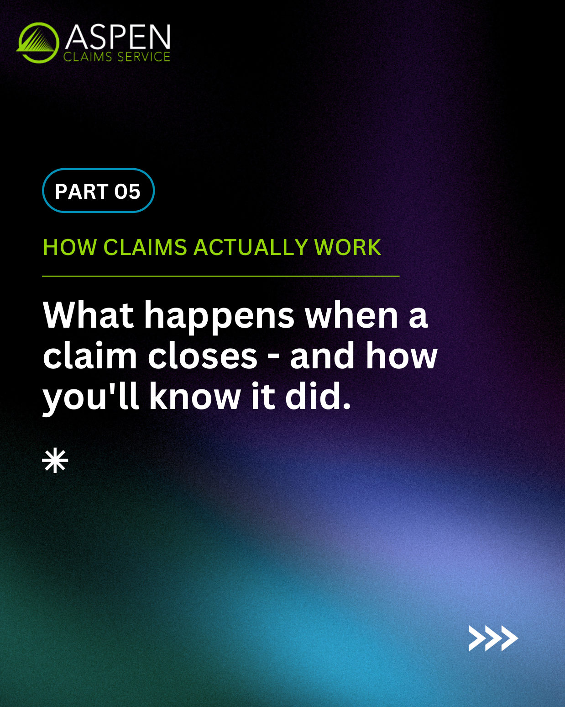
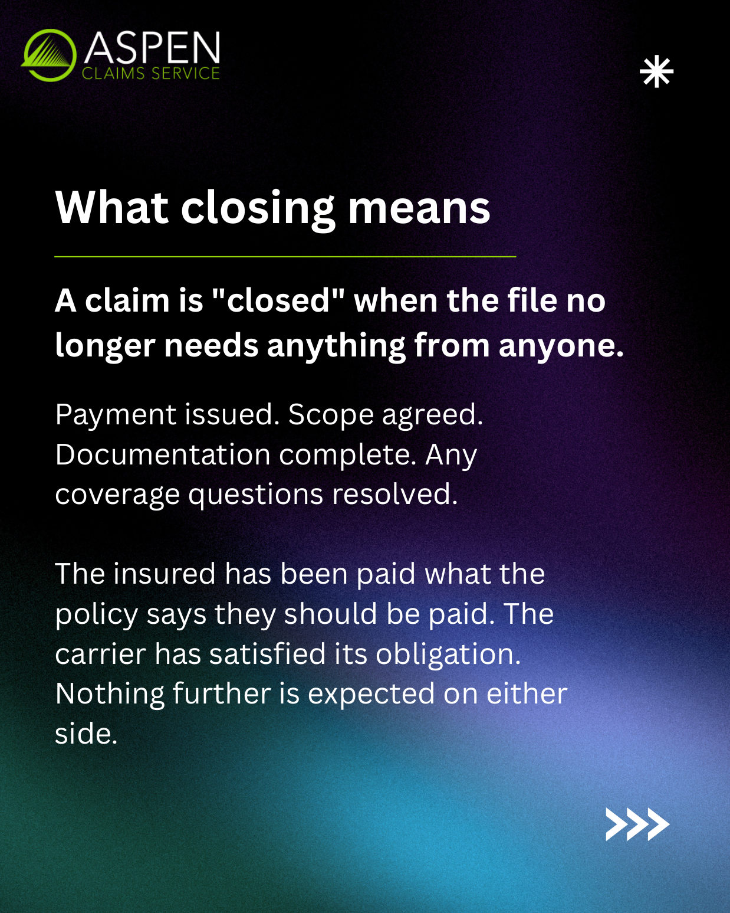
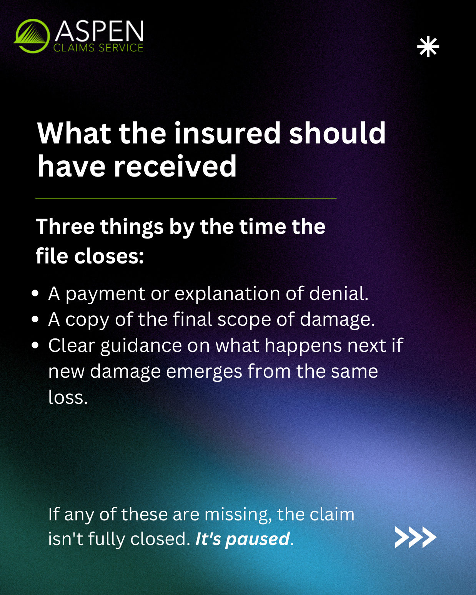
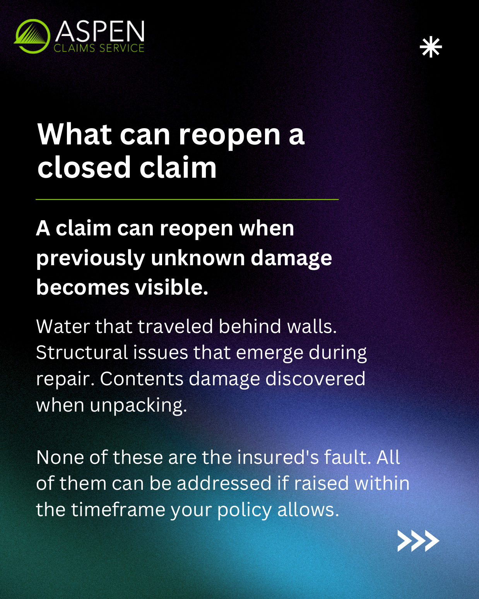
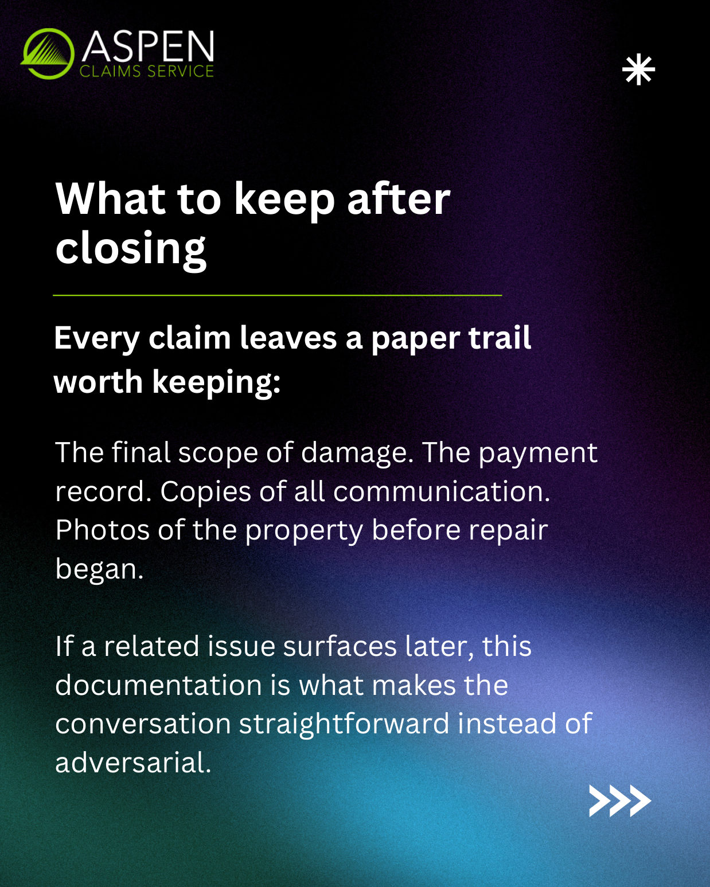
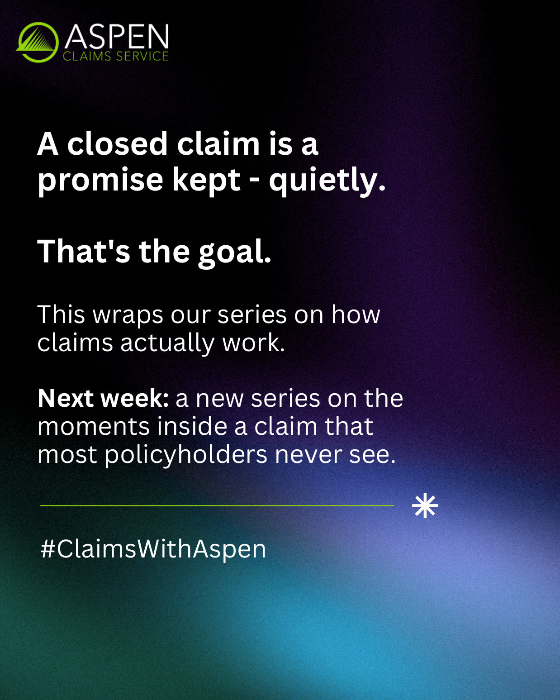
1/6
👍 Like💬 Comment🔁 Repost➤ Send
✎ Caption promises the new series “next week” — Behind the File Part 01 now lands 2 Sep, two weeks out. Either soften the line or move Part 01 forward.
Thu · 20 AugMark POV · quote card · Mark's profile
Mark VetrovecCEO, Aspen Claims ServiceScheduled · 20 Aug 🌐
+ Follow
When Aspen starts working with a new carrier, my first question is almost always the same. What's the file you regret the most from last year — and why?
It sounds like a strange thing to lead with. It's not. What a claims leader remembers as their worst file usually reveals more about how their operation actually works than any performance metric they could show me.
Some carriers name a specific catastrophic loss. Others name a routine file that spiraled. Some name a complaint they still feel personally about. What they all share is the moment the leader knew something had gone wrong — and where the system failed them.
That's the diagnostic. Because whatever produced last year's regretted file is almost always still in the operation, waiting to produce the next one. It might be a workflow bottleneck. It might be a vendor handoff. It might be a communication gap that only shows up under specific conditions.
The best claims operations I've seen aren't the ones without regretted files. They're the ones where the leader can name what changed after the regretted file happened.
If you're heading into next year's planning cycle, that question is worth asking yourself before anyone asks it of you.
#ClaimsWithAspen #AspenVoices #ClaimsLeadership
…see more
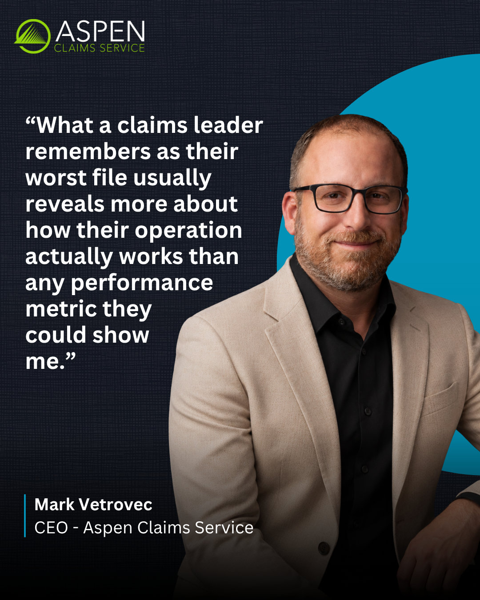
👍 Like💬 Comment🔁 Repost➤ Send
Fri · 21 AugLong-form article · Brent's profile
BM
Brent MorrowOperations Manager, Aspen Claims ServiceScheduled · 21 Aug 🌐
+ Follow
You can spot a well-run field operation in the first fifteen minutes of a deployment. Here's what you're looking at.
I've spent enough time in the field across enough events to know within the first fifteen minutes of arriving whether a deployment is going to run well or run rough. The tells are small. Most of them aren't things you'd notice unless you'd been on both sides of them — a well-run event and one that unraveled — and even then they're easy to miss if you're focused on the wrong things.
This is a piece for claims leaders who don't spend time in the field but need to know what good looks like when they're evaluating a vendor's field capabilities. It's also for the field adjusters who are trying to work out what separates a deployment they'll want to come back to from one they won't.
The first tell is how people are briefed
Every deployment starts with a briefing. The briefing tells you almost everything you need to know about how the operation runs.
A weak briefing sounds like this: coverage territory, claim volume, filing deadlines, contact numbers, hotel information. Twenty minutes, everyone leaves with the same generic information, and questions get worked out later on individual calls.
A strong briefing sounds different. The person leading it knows which adjusters are on the deployment by name. They've thought about which routes go to whom based on distance and complexity. They flag the specific carrier requirements that differ from what the team has been working on. They give the field team permission to escalate — with a specific person to escalate to and a phone number that will actually get answered.
The difference isn't in what gets covered. It's in whether the person leading it has actually thought about the specific event they're briefing on, or whether they're running a template.
The second tell is how the schedule works
Bad field operations run inspection schedules on rigid time blocks that don't reflect what any given inspection actually requires. Every property gets the same slot. When one runs long — and one always runs long — the entire day cascades.
Good field operations schedule against complexity, not against clock. Simple losses in tight windows. Complex losses with buffers. Multi-property routes clustered geographically. The dispatcher knows which properties are two-story, which need ladder assist, and which have policyholder access constraints that will slow down the front end.
When you're an adjuster running an eight-inspection day, the difference between the two approaches is roughly whether you finish the day at 5:30 with clean files, or at 8:00 with three files half-documented and a plan to catch up tomorrow.
The third tell is how escalations get handled
Every field deployment produces situations that need a decision from someone above the adjuster level. Coverage questions. Access disputes. Complex causation calls. Policyholder situations that require special handling.
The measure of a field operation is how fast those escalations move.
In a well-run operation, the adjuster calls a specific person who has authority to make the call. The answer comes back within hours. The adjuster keeps moving.
In a weak operation, the escalation gets routed through a queue. It sits. The adjuster either waits — which stalls the file — or makes their best guess and moves on, which creates a downstream problem the file will have to solve later.
Speed of escalation is one of the most measurable indicators of field operations health, and it's rarely tracked as a metric. It should be.
The fourth tell is what happens between inspection and submission
This is the part most people outside field operations don't think about. Between the adjuster leaving the property and the file reaching the carrier desk, a lot happens — and how it happens tells you what the vendor is optimizing for.
A weak operation lets adjusters draft files at whatever cadence they naturally work at. Some submit within twenty-four hours. Some take three days. Consistency isn't managed.
A strong operation has an inspection-to-submission target that everyone works to — usually within twenty-four to forty-eight hours — and structures the review process to make that target achievable. Support staff help with scope entry. QA reviewers are available quickly. The system is built around the reality that a fresh file writes better than a stale one.
The fifth tell is how adjusters talk about the operation
This one is subjective but consistent. Adjusters who work in strong field operations describe the work in a specific way. They talk about the file, the property, the loss, the policyholder. They don't spend much time talking about internal friction.
Adjusters in weaker operations talk about the operation itself. The scheduling. The QA turnaround. The communication gaps. The workarounds they've developed.
When you ask a vendor to let you talk to their field adjusters, this is the signal to listen for. It tells you what the day-to-day experience of working on the deployment actually is — which tells you a lot about what the files coming out of that deployment will look like.
What this means for claims leaders
Most vendor evaluations focus on capabilities, technology, and coverage. Those matter. But they're the part of the operation that shows up in the RFP. The five tells above are what shows up in the deployment itself, and they're the ones that decide how the files actually land on your desk.
Worth asking about before the next event.
— Brent Morrow
Operations Manager, Aspen Claims Service
…see more
👍 Like💬 Comment🔁 Repost➤ Send
✓ The truncated close is fixed — the article now ends on “Worth asking about before the next event.” Full piece is ready to publish from Brent’s profile.
Fri · 21 AugAspen page reshare of Brent's post
Aspen Claims ServiceProperty Claims ServicesScheduled · 21 Aug 🌐
+ Follow
A new piece from Brent on the small, structural details that separate strong field operations from average ones — the things nobody talks about but everyone in the field can see.
[Article link]
— Brent Morrow, Operations Manager · Aspen Claims Service
…see more
👍 Like💬 Comment🔁 Repost➤ Send
✎ Still no quote card for Brent’s article. Mark’s equivalent (7 Sep) has one — either match it or accept a bare reshare here.
Week 2
Mon · 24 AugStatic · Q2 regulatory sweep — creative in production
Aspen Claims ServiceProperty Claims ServicesScheduled · 24 Aug 🌐
+ Follow
Rather than a single deep-dive on one regulatory shift, worth pulling back for a broader view of what's moved this quarter.
Three quiet developments from Q2 that changed the operational file standard across multiple states, without generating much industry conversation.
Louisiana — post-Ida claims handling guidance. The state issued clarifying language on continuing-adjustment obligations for files where reconstruction has extended past normal windows. Documentation requirements for extended-adjustment files are now closer to what regulators expect on active files, not archived ones.
North Carolina — updated appraisal panel disclosure requirements. New expectations around who qualifies as an appraiser, what disclosures the panel members must make, and how the appraisal process interacts with pending litigation. Operational shift is small; the paperwork trail is meaningful.
California — updated ALE guidance on displacement extensions. The state clarified how additional living expense should be calculated when displacement extends beyond the initial coverage window. Vendors and carriers with California exposure should be tracking this — the interpretation matters.
None of these developments made industry headlines. All of them changed something about how a compliant file needs to be built.
If your operation's regulatory tracking still runs on major-headline monitoring, this is the quarter to add a broader sweep to the workflow.
#ClaimsWithAspen #ClaimsIntelligence #InsuranceRegulation
…see more
Creative in production · Static
“None of these developments made industry headlines. All of them changed something about how a compliant file needs to be built.”
Aspen Claims Service
👍 Like💬 Comment🔁 Repost➤ Send
✎ Static still not delivered — placeholder carries the approved copy line. The three regulatory items are stated as guidance rather than cited law; verify each against source before this runs.
Wed · 26 AugStatic · “We'll get back to you” — corrected creative
Aspen Claims ServiceProperty Claims ServicesScheduled · 26 Aug 🌐
+ Follow
Four words that appear in most claims workflows and quietly do more damage than most operations realize.
"We'll get back to you."
Said by the adjuster to the policyholder. Said by the carrier desk to the adjuster. Said by the vendor to the carrier. Every version of the phrase adds a beat to the file's timeline and takes something off the account of trust the customer is holding.
The problem isn't the delay itself. The problem is the ambiguity. "We'll get back to you" leaves the receiver holding the uncertainty — not knowing when, not knowing whether to follow up, not knowing whether the file is actually moving.
The operations that handle this well replaced the phrase years ago. Instead of "we'll get back to you," they say "we'll have an answer by Thursday at 3pm." Small difference. Enormous downstream effect.
Specificity closes cognitive loops. Ambiguity leaves them open. Multiply that across a thousand-file book and the operational cost adds up.
The claims operations winning on satisfaction scores right now aren't necessarily faster than the ones losing on them. They're just more specific.
#ClaimsWithAspen #ClaimsOperations #PolicyholderExperience
…see more
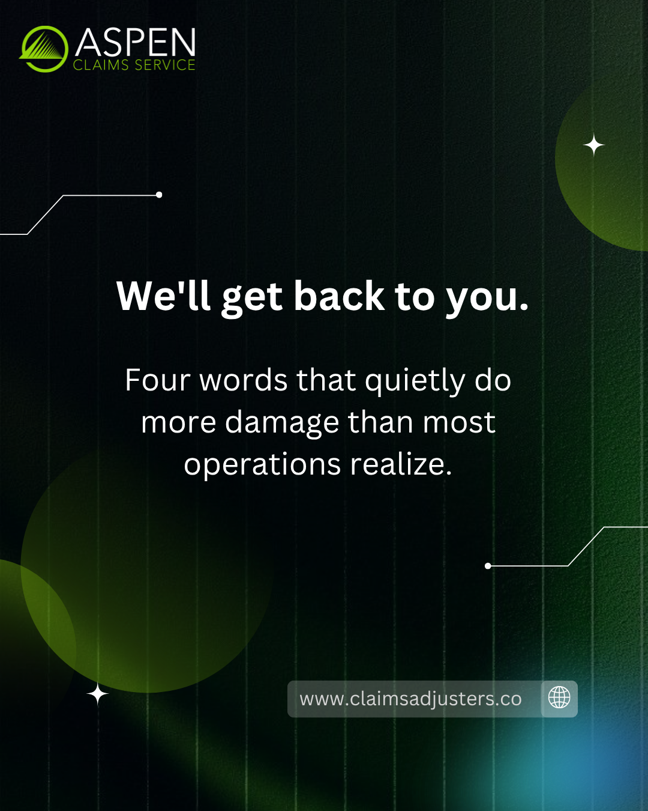
👍 Like💬 Comment🔁 Repost➤ Send
✓ Corrected and redelivered. The subline now reads “Four words that quietly do more damage than most operations realize” — the regulatory line that was sitting here has been removed.
Fri · 28 AugVideo · Mark VO (~75s) — creative in production (AI voiceover)
Mark VetrovecCEO, Aspen Claims ServiceScheduled · 28 Aug 🌐
+ Follow
A short one from Mark on the questions coming out of carrier board conversations this year — and what they say about where the industry is heading.
🔊 Sound on.
#ClaimsWithAspen #AspenVoices #ClaimsLeadership
…see more
Creative in production · AI voiceover
👍 Like💬 Comment🔁 Repost➤ Send
✎ Video not yet produced — placeholder shows the approved visual direction. The three board questions (competitiveness, measuring trust, claims succession) are ready to record; ~75s script sits in the calendar.
Week 3
Mon · 31 AugStatic · The complaint that never gets filed
Aspen Claims ServiceProperty Claims ServicesScheduled · 31 Aug 🌐
+ Follow
The most useful data point in your claims operation is one most carriers never track.
For every formal complaint that gets filed against a claim, there are usually multiple policyholders who were unhappy enough to consider complaining and didn't. They chose not to escalate. They renewed anyway, or they didn't. Either way, their dissatisfaction never entered the system as data.
This invisible complaint volume is where most of the real customer experience story lives. Carriers with formal complaint rates that look fine can still have retention problems, referral gaps, and reputational drag that trace back to files where policyholders felt something went wrong but didn't push it further.
Three ways to surface the invisible signal:
Post-close surveys with open-response fields. Not just NPS scores. Ask what the policyholder wishes had been different. Read the free text.
Adjuster debriefs on difficult files. Adjusters know which files had unhappy policyholders long before any complaint would get filed. Ask them.
Renewal data cross-referenced with claim history. Policyholders who filed a claim and didn't renew are telling you something. The reasons don't always get captured, but the correlation does.
The claims operations pulling ahead on retention are the ones treating the complaint that didn't get filed as data worth chasing. It's the earliest signal available. It's also the one most operations aren't looking at.
#ClaimsWithAspen #ClaimsIntelligence #PolicyholderExperience
…see more
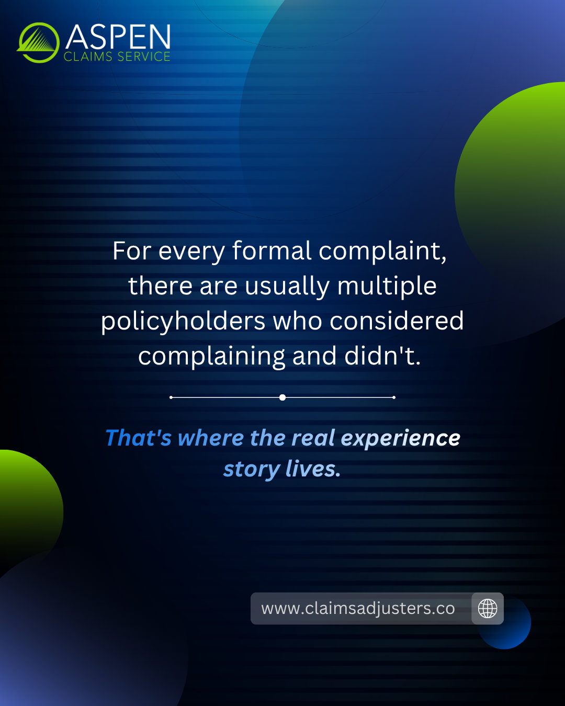
👍 Like💬 Comment🔁 Repost➤ Send
Wed · 2 SepCarousel · New series opener — Behind the File, Part 01
Aspen Claims ServiceProperty Claims ServicesScheduled · 2 Sep 🌐
+ Follow
Introducing a new series — Behind the File.
Every claim has moments that shape everything downstream, but most of them happen out of the policyholder's view. Coverage decisions. Escalations. Documentation calls. Judgment moments the file never quite captures.
This series pulls back the curtain on the operational decisions that happen inside a file — the ones that decide how it lands, what it costs, and how it's remembered.
Part 01: The moment a coverage decision actually gets made.
#ClaimsWithAspen #BehindTheFile #ClaimsOperations
…see more
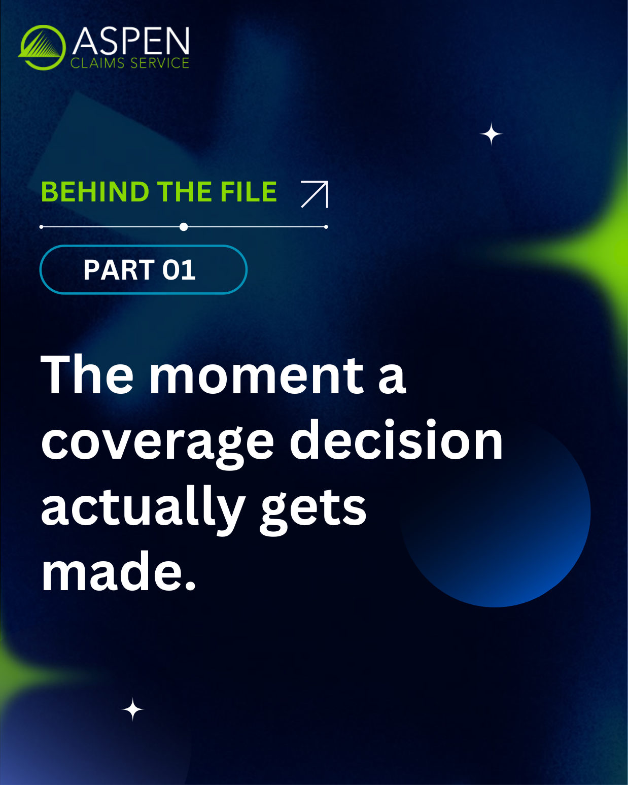
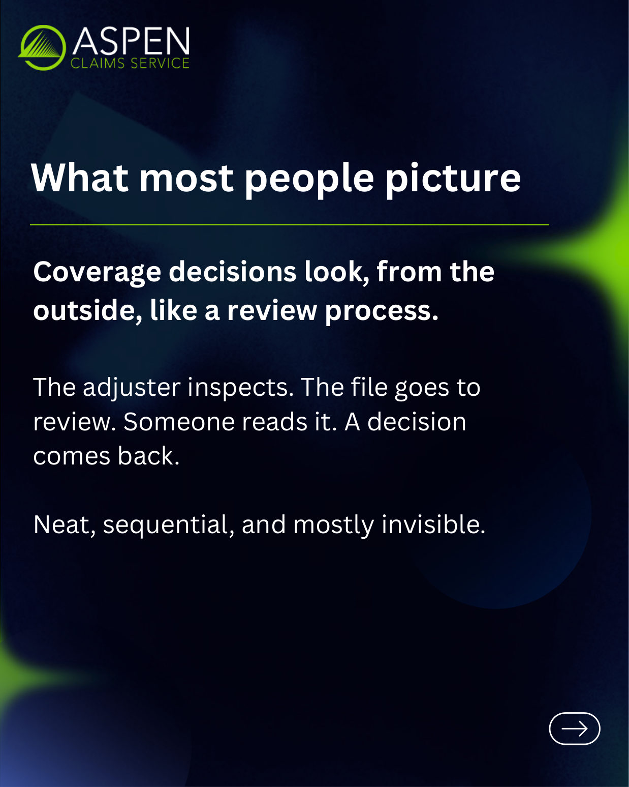
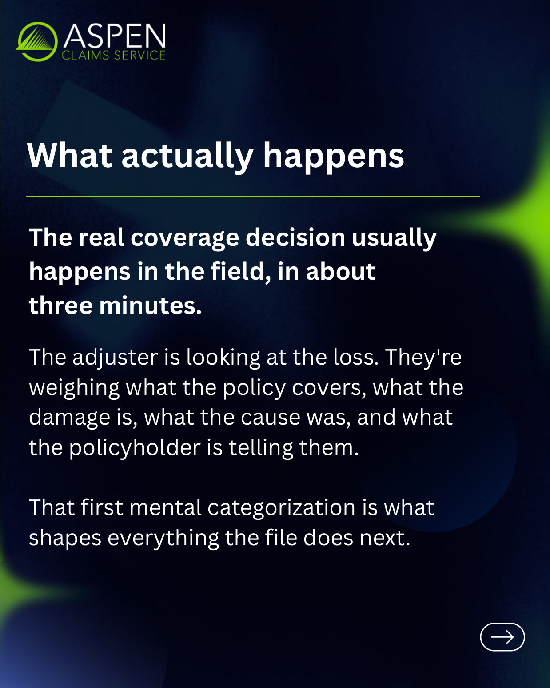
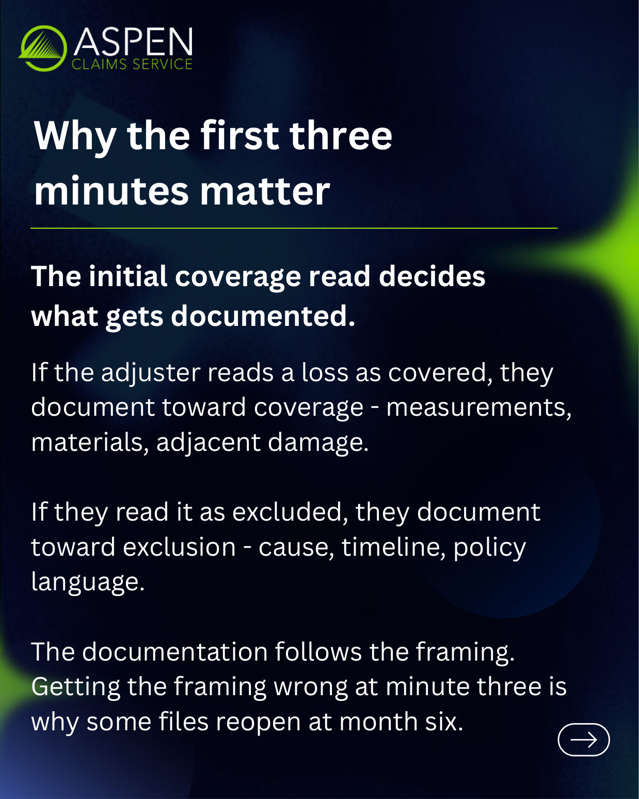
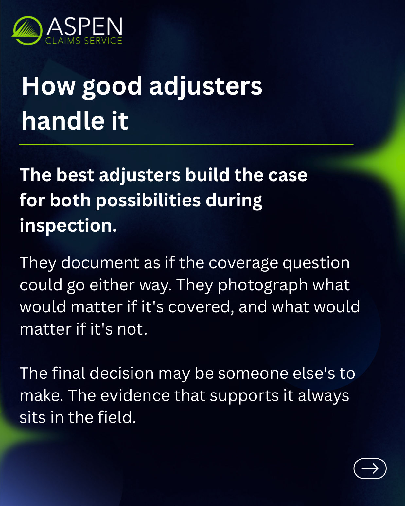
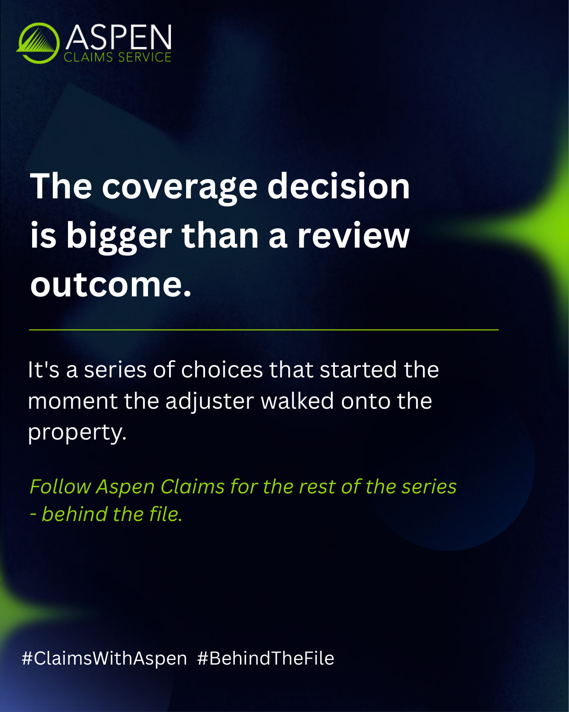
1/6
👍 Like💬 Comment🔁 Repost➤ Send
✎ Series handoff: this is the post Part 05 refers to as “next week.” If the finale caption isn’t softened, this is the one to move forward instead.
Fri · 4 SepMark POV · quote card · Mark's profile
Mark VetrovecCEO, Aspen Claims ServiceScheduled · 4 Sep 🌐
+ Follow
An observation worth sharing, because I hear the opposite version of it constantly.
The claims vendors talking loudest about AI right now are almost never the ones using it most effectively. They're the ones with the biggest marketing budgets and the least operational integration.
The vendors actually using AI well — for file completeness checks, photo analysis, workflow triage, quality assurance support — usually treat it as an internal operational discipline, not as a headline. It's not something they lead their pitch with. It's something that quietly makes their files cleaner and their turnaround faster.
The distinction matters, because carriers spending real dollars on AI-heavy vendor relationships are often paying for the pitch, not the operational advantage. And the operational advantage — the one worth paying for — is usually invisible from outside the operation.
If you're evaluating a vendor that leads with AI capabilities, worth asking a specific question: Show me a recent file where AI meaningfully affected the outcome. Walk me through what changed because of it.
If they can answer specifically, that's a real operation. If the answer is vague or hypothetical, that's marketing.
The technology matters. The way it's talked about tells you whether it's actually being used.
#ClaimsWithAspen #AspenVoices #VendorPerformance
…see more
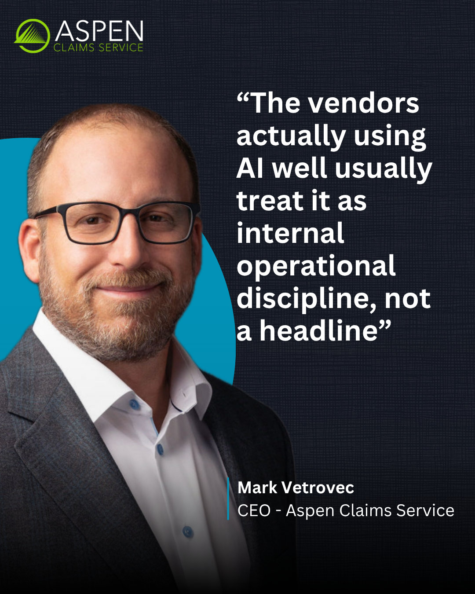
👍 Like💬 Comment🔁 Repost➤ Send
Week 4
Mon · 7 SepLong-form article · Mark's profile
Mark VetrovecCEO, Aspen Claims ServiceScheduled · 7 Sep 🌐
+ Follow
The word "partner" has been overused in vendor conversations to the point of losing meaning. It's finally starting to mean something again — and here's what actually distinguishes a partner from a vendor.
For most of my career, the word "partner" in vendor conversations meant nothing. It was the polite thing carriers called vendors when they wanted the relationship to feel less transactional than it was. Everyone knew it. Nobody said it. The word did some marketing work and moved on.
Something has shifted over the last two years. The word is starting to mean something again — and the vendors and carriers who understand what it means now are pulling ahead of the ones still using it as a decorative term.
Here's what I've come to believe distinguishes a real partnership from a vendor relationship dressed up in partnership language.
A partner is measured on outcomes the vendor doesn't fully control
A vendor is measured on their deliverables. Cycle time. Cost per file. SLA compliance. These are things the vendor can control end-to-end — inputs go in, outputs come out, performance is measurable.
A partner is measured on outcomes that require both parties to get right. Reopen rate. Policyholder satisfaction. Retention on claim-affected policies. Total lifecycle claim cost. These aren't things the vendor can control alone. They require the carrier's workflow to work with the vendor's workflow, and they measure whether the combined system is producing the outcomes the carrier actually cares about.
When a carrier starts measuring a vendor on outcomes the vendor can't fully control, they're not being unfair. They're signaling that the relationship has moved from transactional to structural.
A partner is invited into problems, not just tasks
A vendor gets assignments. Files come in, work gets done, files go out. The relationship stays inside a defined scope of work.
A partner gets invited into problems the carrier is trying to solve. How do we improve our CAT response? How do we bring down our supplement volume? How do we design a better file standard? These conversations happen outside the SOW. They happen because the carrier trusts the vendor to think about their business, not just to execute against it.
The invitation is the tell. When a vendor gets asked to weigh in on strategic questions, the relationship has moved somewhere different than a normal contract.
A partner tells the carrier things they don't want to hear
This is the one that separates the real partnerships from the ones performing partnership language.
A vendor delivers what the carrier asks for. If the carrier asks for aggressive cycle times, the vendor optimizes for aggressive cycle times. If the carrier asks for a specific file standard, the vendor delivers to that standard. The relationship stays professional, deliverable-focused, and pleasant.
A partner sometimes tells the carrier that what they're asking for is going to cost them elsewhere. That the cycle time they want will produce reopens they don't want. That the file standard they specified is missing a documentation element that will show up as a supplement six months later. That the vendor they're evaluating for CAT capacity has structural problems they should know about.
These are uncomfortable conversations. Vendors avoid them because they're not their place. Partners have them because they know that if they don't, the carrier will pay a downstream cost that the vendor could have flagged.
The willingness to be uncomfortable is the highest-signal indicator I know of that a partnership has actually formed.
A partner is stable through leadership changes
Vendor relationships live inside org charts. When a claims VP changes, or a procurement director moves on, the vendor relationship often gets reevaluated. The relationship was with the person, not with the institution.
Partnerships survive personnel changes. They survive because they've been documented in structures other than a single relationship — joint operating rhythms, shared metrics dashboards, escalation protocols that outlast any one leader. The next VP inherits a working relationship, not an evaluation cycle.
This is one of the practical tests for whether a partnership is real. Ask what happens to the vendor relationship if the current claims VP leaves. If the answer is honest — "it would probably get reviewed" — that's a vendor relationship, and there's nothing wrong with that. If the answer is "the working rhythm continues regardless" — that's structural, and that's a partnership.
A partner is willing to walk away
This one is counterintuitive. But it's true.
A vendor is incentivized to keep the relationship going regardless of fit, because their revenue depends on it. A partner is willing to say, at some point, that a particular piece of work isn't the right fit for their operation and should be handled elsewhere.
That willingness to walk away is what makes the working relationship trustworthy. If a vendor will take any assignment, their advice is worth less. If a vendor will decline work that's not right for them, their willingness to take on the work you do give them means something.
The best partners I've watched work are also the ones most willing to be honest about the limits of what they should be doing.
Why this matters now
The industry is heading into a period where the difference between a vendor relationship and a partnership is going to matter more than it has in a long time. Regulatory pressure is increasing. Reinsurance costs are shifting. Policyholder expectations are recalibrating. Carriers that navigate these shifts well are going to be the ones with real partners on the vendor side, not just capable vendors.
The word "partner" is finally starting to mean something because the operational stakes have gotten high enough to require it.
Worth reading the vendor conversations in your own operation with those distinctions in mind.
— Mark Vetrovec
CEO, Aspen Claims Service
…see more
👍 Like💬 Comment🔁 Repost➤ Send
Mon · 7 SepAspen page reshare of Mark's post
Aspen Claims ServiceProperty Claims ServicesScheduled · 7 Sep 🌐
+ Follow
A piece on the shift happening quietly in how carriers and claims vendors are structuring their relationships — and what makes a partnership real rather than nominal.
[Article link]
— Mark Vetrovec, CEO · Aspen Claims Service
…see more
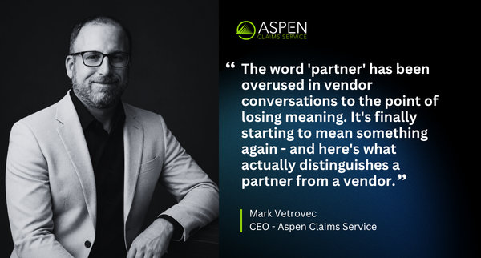
👍 Like💬 Comment🔁 Repost➤ Send
Wed · 9 SepVideo · Brent VO (~75s) — creative in production (AI voiceover)
BM
Brent MorrowOperations Manager, Aspen Claims ServiceScheduled · 9 Sep 🌐
+ Follow
A short one from Brent on something he says often in internal conversations — and rarely says publicly. Worth putting on record.
🔊 Sound on.
#ClaimsWithAspen #AspenVoices #FieldOperations
…see more
Creative in production · AI voiceover
BM
👍 Like💬 Comment🔁 Repost➤ Send
✎ Video not yet produced — placeholder shows the approved visual direction. Full ~75s VO script is in the calendar, ready for recording.
Fri · 11 SepStatic · September Post 1 — the 90-day CAT read
Aspen Claims ServiceProperty Claims ServicesScheduled · 11 Sep 🌐
+ Follow
The most useful CAT deployment metric doesn't get its full read until 90 days after the event closes.
Cycle time during the deployment tells one story. Supplement volume in the 30, 60, and 90-day windows after closure tells a different one — and the two stories often contradict each other.
The pattern most common in post-event data:
Files closed fastest during the deployment produce the highest supplement rates in the 60-day window.
Vendors ranked highest on cycle time often rank differently when 90-day supplement volume is included in the ranking.
The total cost of a CAT deployment isn't calculable until this window has passed.
Most carrier CAT reporting stops when the deployment closes. The post-event report gets filed, the team moves on, and the supplement volume that shows up in the following weeks gets absorbed into general quarterly numbers — disconnected from the deployment that produced it.
The carriers who understand their real CAT performance are the ones who keep tracking specific event-linked supplement volume through the 90-day window. It's a small change in reporting discipline. It produces a materially more honest picture of which vendors and which operational choices actually worked.
Worth adding to this year's post-mortem before the data starts to blur.
#ClaimsWithAspen #ClaimsIntelligence #CATResponse
…see more
Not yet delivered · Static
“The most useful CAT metric doesn’t get its full read until 90 days after the event closes.”
Aspen Claims Service
👍 Like💬 Comment🔁 Repost➤ Send
✎ New in this version — creative not yet briefed. Also note the three bullets are stated as established patterns in post-event data with no source attached; the safest read is to frame them as what Aspen sees rather than as industry fact.
Week 5
Mon · 14 SepCarousel · September Post 2 — Behind the File, Part 02
Aspen Claims ServiceProperty Claims ServicesScheduled · 14 Sep 🌐
+ Follow
Part 02 of Behind the File.
Every claim has a moment where the adjuster's read and the policyholder's expectation don't line up. How that moment gets handled decides more about the file than most people outside claims realize.
#ClaimsWithAspen #BehindTheFile #ClaimsOperations
…see more
Copy approved · creative pending
Frame 1
Behind the File · Part 02
What happens when the adjuster disagrees with the policyholder.
Aspen Claims Service
Copy approved · creative pending
Frame 2
The moment. Every claim has one.
The adjuster sees the damage one way, but the policyholder sees it another.
How this moment gets handled decides more than most people realize.
Aspen Claims Service
Copy approved · creative pending
Frame 3
What do strong adjusters do? They slow down.
They listen fully and explain clearly. Document both views — what the policyholder observed, what the adjuster observed, and why they differ.
Slowing down here saves weeks of disputes later.
Aspen Claims Service
Copy approved · creative pending
Frame 4
What do the weak ones do? They defend, or they concede.
Defending turns it adversarial. Conceding creates supplements six months later.
Neither respects the policyholder or protects the file.
Aspen Claims Service
Copy approved · creative pending
Frame 5
Why documentation matters most here
A file that documents the reasoning behind the disagreement, and not just the outcome, is the one that holds up.
Aspen Claims Service
Copy approved · creative pending
Frame 6
Closing
The best adjusters treat disagreement as data, and not conflict.
That's the difference between a file that closes cleanly and one that comes back.
Stay tuned for the rest of the series.
Aspen Claims Service
👍 Like💬 Comment🔁 Repost➤ Send
✎ New in this version — frames below are the approved copy set out for review; the designed carousel hasn’t been produced yet. Frames 3 and 4 are written as questions (“What do strong adjusters do?”) where Part 01 used statements — worth matching the two for series consistency.